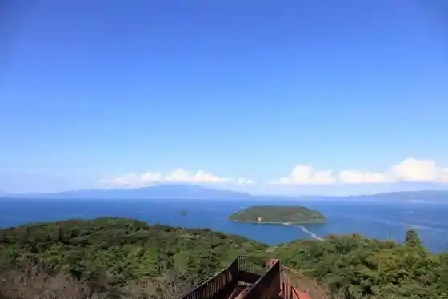
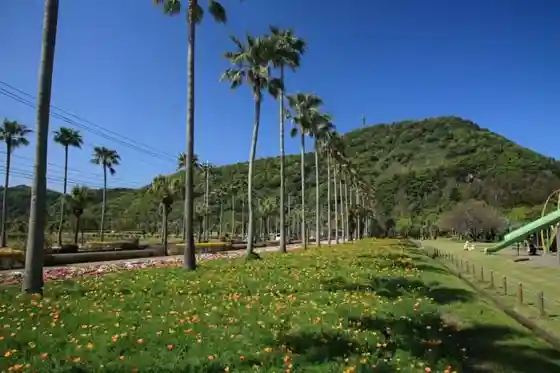
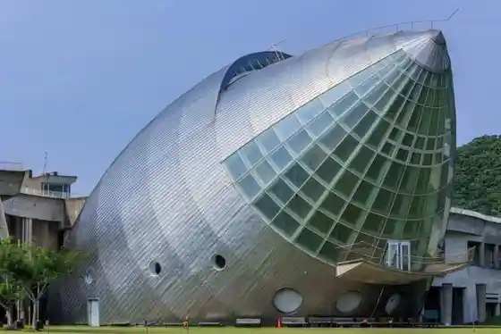
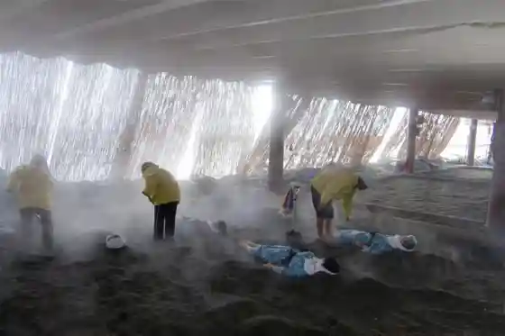

Chi Hayashigashima
Ibusuki, Kagoshima · 0993-22-2111 · Official / source link

Uomi Gaku
Ibusuki, Kagoshima · 0993-22-2111 · Official / source link

Fureai Plaza Na no Hana Kan
Ibusuki, Kagoshima · 0993-27-1221 · Official / source link

Suna Mushi Hall (Suna Raku)
Ibusuki, Kagoshima · 0993-23-3900 · Official / source link

Iwasaki Art Museum
Ibusuki, Kagoshima · 0993-22-2131 · Official / source link
Ibusuki Koko Museum Toki Yu Kan COCCO Hashimure
Ibusuki, Kagoshima · 0993-23-5100 · Official / source link
Nigatsuden Onsen (Tonosama Yu)
Ibusuki, Kagoshima · 0993-22-2827 · Official / source link
Ikeda Mizumi
Ibusuki, Kagoshima · 0993-22-2111 · Official / source link
Furawa Park Kagoshima
Ibusuki, Kagoshima · 0993-35-3333 · Official / source link
Herushii Land Rotemburo (Tamate Hako Onsen)
Ibusuki, Kagoshima · 0993-27-6966 · Official / source link
Kuei Unagi Onsen
Ibusuki, Kagoshima · 0993-35-0814 · Official / source link
Yamakawa Suna Mushi Onsen (Sunayu Sato)
Ibusuki, Kagoshima · 0993-35-2669 · Official / source link
Nagasaki Hana Pakingu Garden
Ibusuki, Kagoshima · 0993-35-0111 · Official / source link
Tokumitsu Shrine
Ibusuki, Kagoshima · 0993-35-0811 · Official / source link
Washio no Mori Nature Park
Ibusuki, Kagoshima · 0993-22-2111 · Official / source link
Nagasaki Hana
Ibusuki, Kagoshima · 0993-22-2111 · Official / source link
Kaibundake
Ibusuki, Kagoshima · 0993-32-5566 · Official / source link
Tosen Kyo Somen Nagashi
Ibusuki, Kagoshima · 0993-32-2143 · Official / source link
Kaimon Sanroku Fureai Park Campground
Ibusuki, Kagoshima · 0993-32-5566 · Official / source link
Soba no Kan (Kairaku Rai)
Ibusuki, Kagoshima · 0993-32-2728 · Official / source link
Reja Center Kaimon
Ibusuki, Kagoshima · 0993-32-5584 · Official / source link
Kaimon Sanroku Koryo Sono
Ibusuki, Kagoshima · 0993-32-3321 · Official / source link
Hirakiki (Hirakiki) Shrine
Ibusuki, Kagoshima · 0993-32-2007 · Official / source link
Tamanoi
Ibusuki, Kagoshima · 0993-22-2111 · Official / source link
Kaimon Sanroku Nature Park
Ibusuki, Kagoshima · 0993-32-2051 · Official / source link
Roadside Station Ibusuki (Ayahana Saikan)
Ibusuki, Kagoshima · 0993-27-9022 · Official / source link
Ibusuki (Ibusuki) Shrine
Ibusuki, Kagoshima · 0993-22-4052 · Official / source link
Imaizumi Shimazu Ieyashiki Ato
Ibusuki, Kagoshima · 0993-22-3257 · Official / source link
Imaizumi Shimazu Ie Bochi
Ibusuki, Kagoshima · 0993-22-2111 · Official / source link
Kyuka Village Ibusuki
Ibusuki, Kagoshima · 0993-22-3211 · Official / source link
Fufu Rotemburo no Yado Gin Matsu
Ibusuki, Kagoshima · 0993-22-2217 · Official / source link
Ibusuki Shirozu Kan
Ibusuki, Kagoshima · 0993-22-3131 · Official / source link
Ryugu Shrine
Ibusuki, Kagoshima · 0993-22-2111 · Official / source link
Yajigayu Onsen
Ibusuki, Kagoshima · 0993-22-3030 · Official / source link
JR Nishi Oyama Eki
Ibusuki, Kagoshima · 0993-34-0132 · Official / source link
Satsuma Densho Kan
Ibusuki, Kagoshima · 0993-23-0211 · Official / source link
Ibusuki Onsen Sato
Ibusuki, Kagoshima · 0993-22-3252 · Official / source link
Choju Iori
Ibusuki, Kagoshima · 0993-32-3155 · Official / source link
Garasu Kuro Satsuma Sakura Shima Hai Shuki
Ibusuki, Kagoshima · 099-800-8635 · Official / source link
Fudo Yama Ao Takashi Tera
Ibusuki, Kagoshima · 0993-26-2306 · Official / source link
Ibusuki Ekimae Ashiyu
Ibusuki, Kagoshima · 0993-22-2111 · Official / source link
Suna Mushi Village (Koryu no Plaza)
Ibusuki, Kagoshima · 0993-23-3900 · Official / source link
Ibusuki no Na no Hanahata
Ibusuki, Kagoshima · 0993-22-2111 · Official / source link
Yamakawa Seien Kojoato
Ibusuki, Kagoshima · 0993-22-2111 · Official / source link
Yamakawa Hatsudensho Tenjishitsu
Ibusuki, Kagoshima · 0993-35-3326 · Official / source link
Shin Eikichi no Tanada
Ibusuki, Kagoshima · 0993-22-2111 · Official / source link
JR Ibusuki Eki
Ibusuki, Kagoshima · Official / source link
Ibusuki Kaigun Koku Kichi Aiseki no Hi
Ibusuki, Kagoshima · 0993-22-2111 · Official / source link
Hanase Bo Hi Park
Ibusuki, Kagoshima · 0993-32-5566 · Official / source link
Senjo Tsuri Experience (Shippo)
Ibusuki, Kagoshima · 0993-23-1234 · Official / source link
Herushii Land Onsen Hoyo Kan
Ibusuki, Kagoshima · 0993-27-6966 · Official / source link
Shinzai Ho no Hotaru
Ibusuki, Kagoshima · 0993-22-2813 · Official / source link
Miyagahama
Ibusuki, Kagoshima · Official / source link
Yamakawa Minato
Ibusuki, Kagoshima · 0993-22-3252 · Official / source link
Ibusuki Onsen Koran Baths Kinko Ro
Ibusuki, Kagoshima · 0993-22-3377 · Official / source link
Ninki Pogamon (Iibui) to Shinka Katachi no Manhoru
Ibusuki, Kagoshima · 0993-22-2111 · Official / source link
Mura Yuki Yu Onsen
Ibusuki, Kagoshima · 0993-23-3713 · Official / source link
Kazoku Onsen no no Kaori
Ibusuki, Kagoshima · 0993-22-4888 · Official / source link
Onsen Yado Moto Ya
Ibusuki, Kagoshima · 0993-24-2852 · Official / source link
Ikeda Mizumi Kayakku Experience (Insutorakuta Tsuki)
Ibusuki, Kagoshima · 0993-26-2799 · Official / source link
Roadside Station Yamakawa Minato Katsu O Kaido
Ibusuki, Kagoshima · 0993-27-6507 · Official / source link
Jito Kariya Ato Sekihi
Ibusuki, Kagoshima · 0993-23-5100 · Official / source link
Kawajiri Coast
Ibusuki, Kagoshima · 0993-22-2111 · Official / source link
Ritoru café
Ibusuki, Kagoshima · 0993-23-5716 · Official / source link
Onsen Mizu Puru & Fufu Rotemburo no Hanare Yado Yu Ri Iori
Ibusuki, Kagoshima · 0993-22-2217 · Official / source link
IKEDAKO PAX (Ikeda Mizumi Pakusu)
Ibusuki, Kagoshima · 0993-23-1411 · Official / source link
Ibusuki no Umi Wo Asobi Tsukuse ! Kinko Wan De Tsuri Experience
Ibusuki, Kagoshima · 0993-22-2236 · Official / source link
Ogon no Torii
Ibusuki, Kagoshima · 090-9723-2242 · Official / source link
Mango Forest
Ibusuki, Kagoshima · 0993-35-0032 · Official / source link
Unagi Onsen Sume Plaza (Tennen no Kamado (Sume))
Ibusuki, Kagoshima · Official / source link